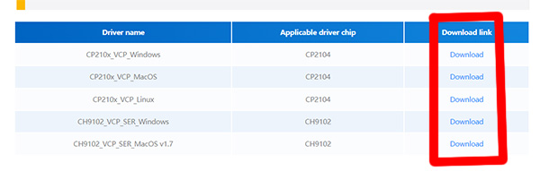

|  |
ファームウェアの書き込みを行うにはドライバが必要です。 ドライバは下記サイトから「 CP210x_VCP_*** 」ダウンロードしてインストールして下さい。 ESP32 Downloader Kit 商品ページ https://docs.m5stack.com/en/accessory/esp32_downloader_kit ※ XIAO ESP32S3 がシリアルポートとして認識できていれば不要です。 ※ 商品ページの下の方にドライバのダウンロードリンクがあるのでそちらからダウンロードして下さい。 |